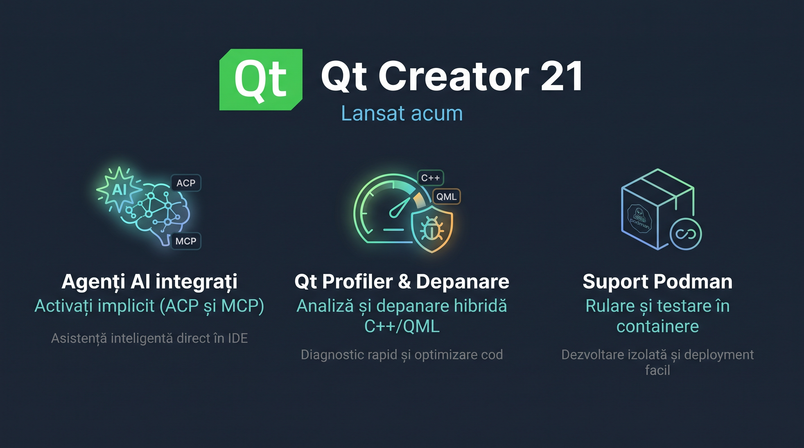

Qt Creator 21 a fost lansat: Agenți AI activați implicit (ACP și MCP), noul Qt Profiler, depanare hibridă C++/QML și suport Podman

Qt Creator 21, mediul de dezvoltare integrat (IDE) multi-platformă pentru aplicații C++, QML și Qt, a fost lansat oficial. Actualizarea activează implicit funcțiile bazate pe agenți AI, înlocuiește vechiul QML Profiler cu un nou mod unificat de analiză a performanței, aduce depanare combinată C++/QML și extinde integrarea cu Git și containerele Podman.
1. Integrare nativă pentru agenți AI (ACP și server MCP securizat)
Agentic AI Chat și server MCP activate implicit: Chat-ul bazat pe ACP (Agent Client Protocol) și serverul integrat MCP (Model Context Protocol, actualizat la versiunea de protocol
2026-07-28) sunt acum active în mod implicit, permițând agenților AI să editeze cod, să compileze proiecte, să ruleze aplicații și să depaneze direct în IDE.Securitate și administrarea agenților: Serverul MCP necesită acum autentificare prin bearer-token în mod implicit pentru a preveni conexiunile neautorizate, iar instrumentele MCP individuale pot fi configurate din preferințe. Interfața de chat permite actualizarea automată a agenților instalați din registru, asocierea sesiunilor cu spațiile de lucru anterioare, afișarea consumului de tokeni și a costurilor aferente, precum și filtrarea sau marcarea modelelor AI favorite.
2. Noul mod Profile (Qt Profiler) și depanare unificată C++ / QML
Qt Profiler înlocuiește QML Profiler: Noul mod Profile introduce Qt Profiler, al cărui panou de bord (dashboard) evaluează caracteristicile de performanță ale aplicației, evidențiază potențialele probleme și oferă sugestii de remediere. Traseele de profilare (profiling traces) pot fi deschise ca documente separate, modul suportă Qt Tracepoints, iar eșantionarea stivei de apeluri (call-stack sampling) este disponibilă pe Windows și macOS.
Motor combinat de depanare C++ și QML: Qt Creator 21 introduce un motor experimental de depanare combinată care oferă urme de stivă (stack traces) unificate între codul C++ și QML, alături de backend-uri experimentale modulare pentru depanator.
3. Git avansat, editor QDoc și suport Podman / HarmonyOS
Flux de lucru Git modernizat: Noua vizualizare Changes listează fișierele modificate cu acces rapid la diferențe (diff), staging, anularea modificărilor și istoricul fișierului. Diferențele individuale pot fi editate direct într-un editor live diff, noua vizualizare Git Log afișează istoricul commit-urilor sub formă de grafic (cu statistici de fișiere și opțiuni de checkout sau cherry-pick), iar conflictele de îmbinare (merge conflicts) pot fi rezolvate interactiv alegând versiunea curentă, pe cea nouă sau ambele.
Editor QDoc și verificare ortografică: IDE-ul adaugă un editor dedicat pentru documentația QDoc cu previzualizare randată și evidențierea erorilor, precum și verificare ortografică (spell checking) pentru comentariile din cod, fișierele text și mesajele de commit (necesitând biblioteca
enchant-2pe Linux).Containere și platforme noi: Dezvoltatorii pot lucra cu containere gestionate de Podman direct din Qt Creator, iar versiunea introduce suport experimental pentru HarmonyOS și dezvoltare la distanță pe Windows prin SSH.